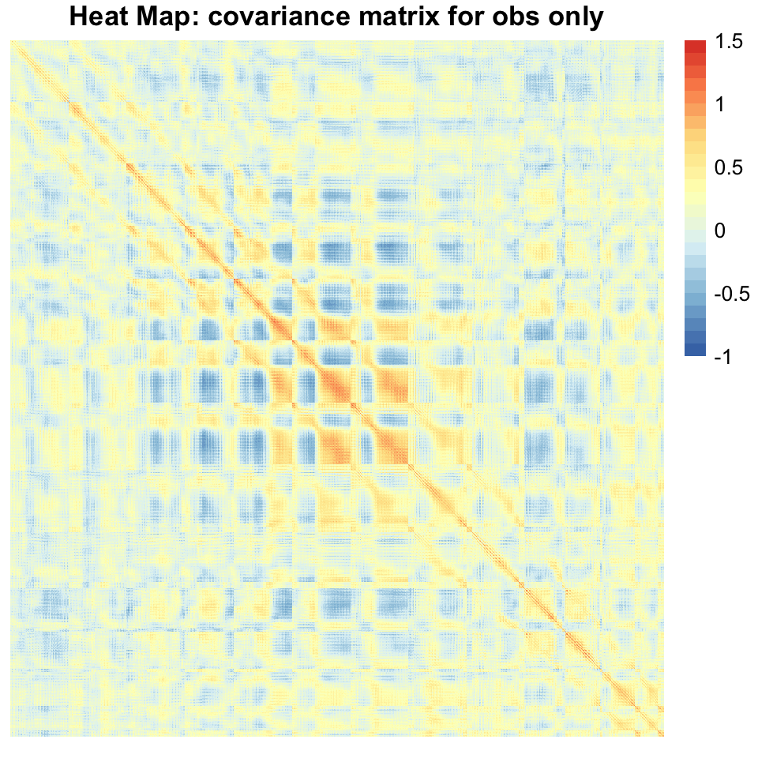
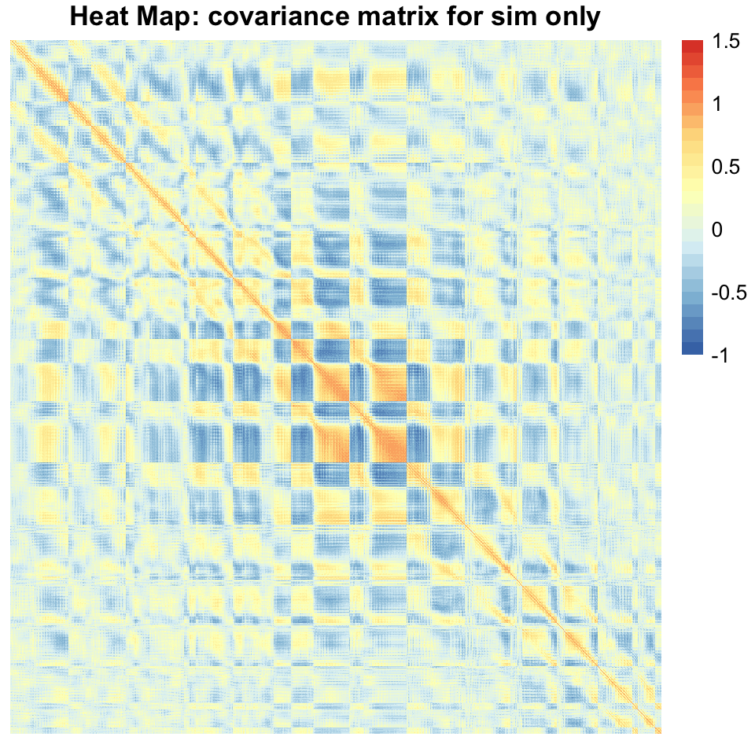
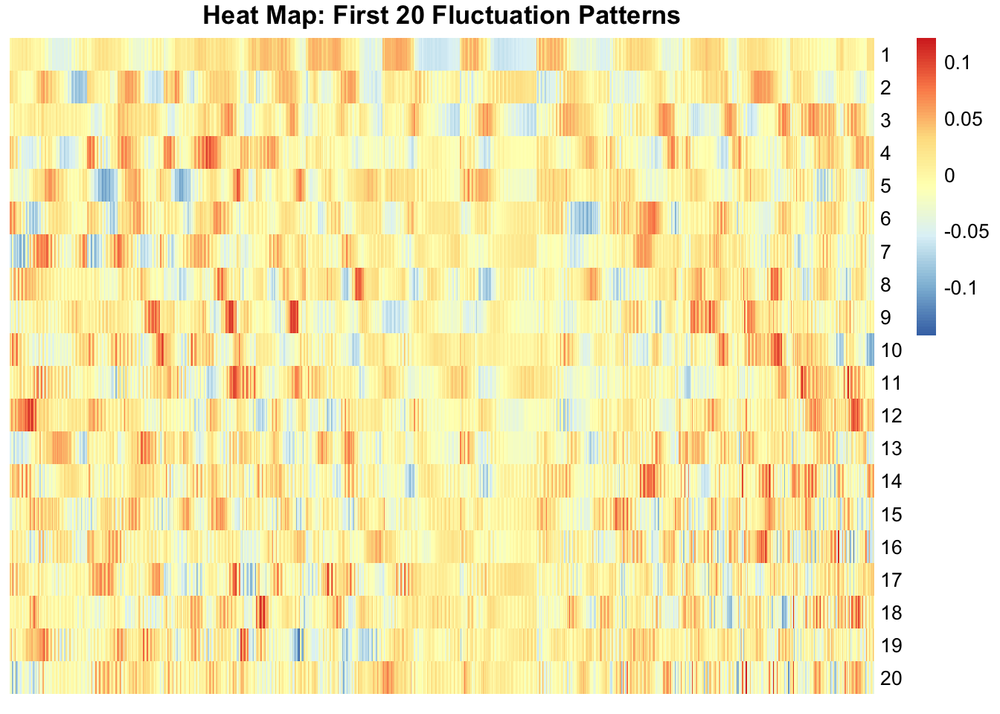
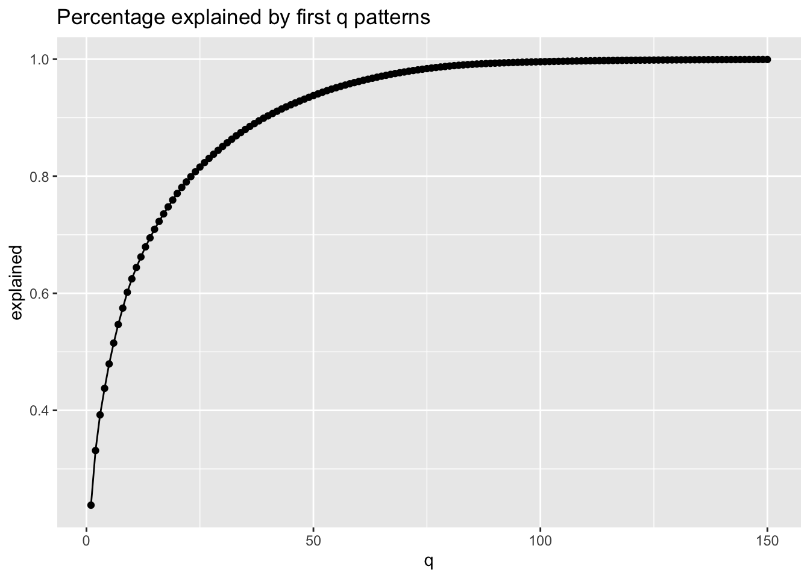
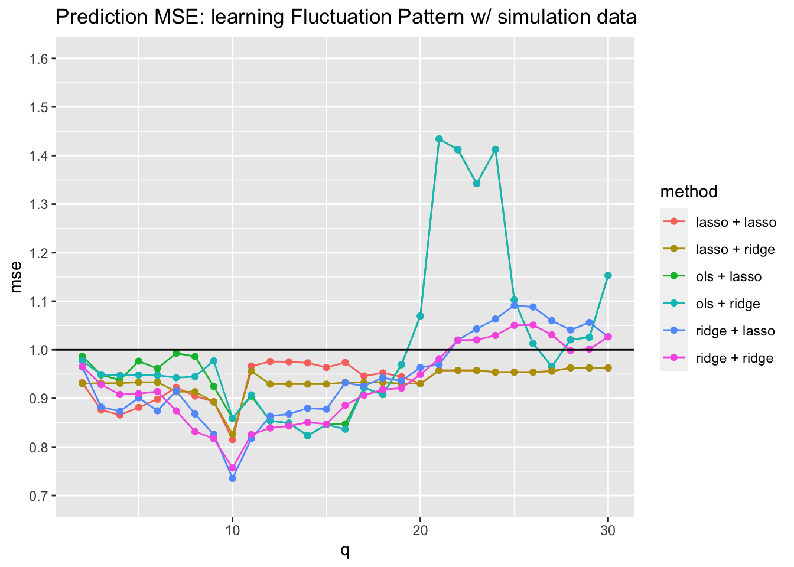
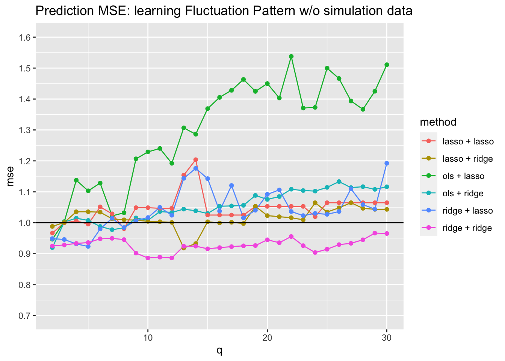
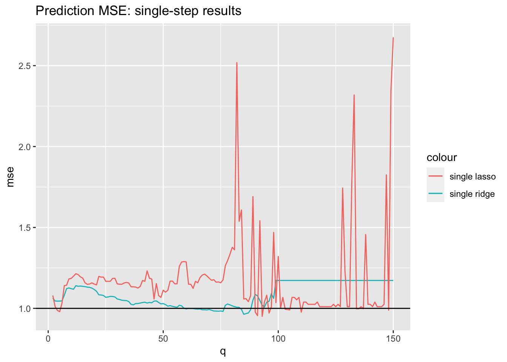

Fluctuation Pattern + Anomaly: low-rank matrix factorization approach
Joonsuk Kang
2020-05-11
Last updated: 2020-05-13
Checks: 7 0
Knit directory: tlcf/
This reproducible R Markdown analysis was created with workflowr (version 1.6.0). The Checks tab describes the reproducibility checks that were applied when the results were created. The Past versions tab lists the development history.
Great! Since the R Markdown file has been committed to the Git repository, you know the exact version of the code that produced these results.
Great job! The global environment was empty. Objects defined in the global environment can affect the analysis in your R Markdown file in unknown ways. For reproduciblity it’s best to always run the code in an empty environment.
The command set.seed(20200324) was run prior to running the code in the R Markdown file. Setting a seed ensures that any results that rely on randomness, e.g. subsampling or permutations, are reproducible.
Great job! Recording the operating system, R version, and package versions is critical for reproducibility.
Nice! There were no cached chunks for this analysis, so you can be confident that you successfully produced the results during this run.
Great job! Using relative paths to the files within your workflowr project makes it easier to run your code on other machines.
Great! You are using Git for version control. Tracking code development and connecting the code version to the results is critical for reproducibility. The version displayed above was the version of the Git repository at the time these results were generated.
Note that you need to be careful to ensure that all relevant files for the analysis have been committed to Git prior to generating the results (you can use wflow_publish or wflow_git_commit). workflowr only checks the R Markdown file, but you know if there are other scripts or data files that it depends on. Below is the status of the Git repository when the results were generated:
Ignored files:
Ignored: .Rhistory
Ignored: .Rproj.user/
Ignored: analysis/figure/
Untracked files:
Untracked: analysis/index_updates.Rmd
Untracked: analysis/origin_bimodality.Rmd
Untracked: analysis/pattern_anomaly_tempcodes.Rmd
Untracked: analysis/temp.Rmd
Untracked: analysis/update_20200420.Rmd
Untracked: code/altmin_fixX.m
Untracked: code/run_altmin_bimodality.m
Untracked: data/forecasting_data/
Untracked: output/errors_p100m14_fixX.csv
Untracked: test.txt
Unstaged changes:
Modified: code/wflow_commands.R
Note that any generated files, e.g. HTML, png, CSS, etc., are not included in this status report because it is ok for generated content to have uncommitted changes.
These are the previous versions of the R Markdown and HTML files. If you’ve configured a remote Git repository (see ?wflow_git_remote), click on the hyperlinks in the table below to view them.
| File | Version | Author | Date | Message |
|---|---|---|---|---|
| Rmd | 4b49317 | Joonsuk Kang | 2020-05-13 | Fluctuation Pattern + Anomaly: low-rank matrix factorization approach |
Leveraging Simulation: Learning Fluctuation Patterns
Instead of using simulation data to learn parameter \(\beta\), we can use it to learn the “fluctuation pattern” in \(X\). While we have only 51 real data points (in train set), we have 2,040 more in simulation train set.
This approach tackles two key issues in our problem: 1) significant correlation in \(X\), 2) restrictive assumption of linearly additive model.
With singular value decomposition \(X=UDV^T=LF\), we can estimate “fluctuation patterns” or “factors” \(F=V^T\) and observations’ factor loadings \(L=UD\). Intuitively, the fluctuation patterns capture shared geographical fluctuation structure of predictor values.
Detecting Anomalies from Fluctuation Patterns via low-rank matrix factorization
We can concatenate observation and simulation data to leverage simulation: \[ X= \begin{bmatrix} X_0\\ X_1 \\ X_2 \\ \dots \\ X_{40} \end{bmatrix} \] where \(X_0 \in \mathbb{R}^{N\times p}=\mathbb{R}^{51 \times 900}\) is the observation data and \(X_i \in \mathbb{R}^{51 \times 900}\) is the data for \(i-\)th simultation for \(i \in \{1,\dots,40\}\).
The SVD is given as \(X=UDV^T\) where \(U\in \mathbb{R}^{N\times p}\), \(D \in \mathbb{R}^{p \times p}\), and \(V \in \mathbb{R}^{p\times p}\). We can interpret SVD as matrix factorization: \(X=LF\) with loading matrix \(L=UD\) and factor matrix \(F=V^T\).
The rank-\(q\) approximation is obtained as \(X=\tilde{L}_q\tilde{F}_q+\tilde{E}_q\) where \(\tilde{L}_q\) is the first \(q\) columns of \(L\), \(\tilde{F}_q\) is the first \(q\) rows of \(F\), and \(\tilde{E}_q=X-\tilde{L}_q\tilde{F}_q\) is the “anomaly” (residual).
We can reshape our parameter space as the union of following two sets: 1) The loadings for the \(q\) fluctuation patterns and 2) the “anomalies” corresponding to the original \(p=900\) predictors.
So, for each observation, we have \(q\) loading values and \(p=900\) anomalies.
Two Benefits
By removing fluctuation patterns in original predictor values, we can detect anomalies which are no longer highly correlated. We use anomalies instead of original predictor values so that it becomes easier to relate a predictor to the response.
Another key advantage is that with the loadings in our model, we can incorporate important structure between predictor and response which are not linearly additive. Note the difference: in our model the response is linear in loadings, which in essence has an effect of complicated non-linear function of predictors.
Reality Checks
Data
library(tidyverse)── Attaching packages ──────────────────────────────────────────────────────────────────────────── tidyverse 1.3.0 ──✓ ggplot2 3.3.0 ✓ purrr 0.3.3
✓ tibble 2.1.3 ✓ dplyr 0.8.4
✓ tidyr 1.0.2 ✓ stringr 1.4.0
✓ readr 1.3.1 ✓ forcats 0.5.0── Conflicts ─────────────────────────────────────────────────────────────────────────────── tidyverse_conflicts() ──
x dplyr::filter() masks stats::filter()
x dplyr::lag() masks stats::lag()library(glmnet); library(doMC); registerDoMC(cores=6)Loading required package: Matrix
Attaching package: 'Matrix'The following objects are masked from 'package:tidyr':
expand, pack, unpackLoaded glmnet 3.0-2Loading required package: foreach
Attaching package: 'foreach'The following objects are masked from 'package:purrr':
accumulate, whenLoading required package: iteratorsLoading required package: parallel# precipitation data from abby
X.o <- as.matrix(read_csv("data/forecasting_data/data/X_obs.csv"))Parsed with column specification:
cols(
.default = col_double()
)See spec(...) for full column specifications.X.s <- as.matrix(read_csv("data/forecasting_data/data/X_sim.csv"))Parsed with column specification:
cols(
.default = col_double()
)
See spec(...) for full column specifications.Y.o <- as.matrix(read_csv("data/forecasting_data/data/y_obs.csv"))Parsed with column specification:
cols(
`0` = col_double()
)Y.s <- as.matrix(read_csv("data/forecasting_data/data/y_sim.csv"))Parsed with column specification:
cols(
`0` = col_double(),
simulation = col_double()
)# test set
X.test <- X.o[52:79,] # years 1991-2018
Y.test <- Y.o[52:79]
# train set with only observation data
X.train0 <- X.o[1:51,] # years 1940-1990
Y.train0 <- Y.o[1:51]
Y.s.array <- array(0, dim=c(51,1,40)) # use only first 51 rows: corresponding to the same years 1940-1990
X.s.array <- array(0, dim=c(51,900,40))
for (i in 1:40){
Y.s.array[,,i] <- Y.s[Y.s[,2]==i,1][1:51]
X.s.array[,,i] <- X.s[X.s[,901]==i,1:900][1:51,]
}
for (i in 1:40){ # standardize (mean 0, sd 1)
Y.s.array[,,i] <- scale(Y.s.array[,,i])
for (j in 1:900){ # standardize each column for each simulation
X.s.array[,j,i] <- scale(X.s.array[,j,i])
}
}
# train set for obs+simulation data
X.train.p <- X.train0
Y.train.p <- Y.train0
for (i in 1:40){
X.train.p <- rbind(X.train.p, X.s.array[,,i])
Y.train.p <- c(Y.train.p, Y.s.array[,,i])
}Covariance of \(X\)
To use simulation data in estimating fluctuation patterns, we need to verify that the covariance matrix of \(X\) in simulation data is similar to the one in observation data, especially considering the frustrating result on stacking/weighting schemes to use simulation data.
library(pheatmap); library(RColorBrewer)
breaksList = seq(-1, 1.5, by = 0.1)
# covariance of observation data
pheatmap(cov(X.train0), cluster_rows=FALSE, cluster_cols=FALSE,
breaks=seq(-1,1.5,by=0.1),
color = colorRampPalette(rev(brewer.pal(n = 7, name = "RdYlBu")))(length(breaksList)),
labels_row="", labels_col = "", main="Heat Map: covariance matrix for obs only")
# covariance of simulation data
pheatmap(cov(X.train.p[52:nrow(X.train.p),]), cluster_rows=FALSE, cluster_cols=FALSE,
color = colorRampPalette(rev(brewer.pal(n = 7, name = "RdYlBu")))(length(breaksList)),
breaks=seq(-1,1.5,by=0.1),
labels_row="", labels_col = "", main="Heat Map: covariance matrix for sim only")
The two covariance matrices look similar. Though we need to verify the utility of using simulation data empirically later, it looks fine to proceed.
What fluctuation patterns look like
svd0 <- svd(X.train0) # obs only train set
svd.p <- svd(X.train.p) # obs+sim train set
mat.L <- svd.p[['u']] %*% diag(svd.p[['d']])
mat.F.all <- t(svd.p[['v']])
mat.F0 <- t(svd0[['v']]) # F matrix with obs-only train setFigure below is the heat map for the first 20 fluctuation patterns. Each row corresponds to one fluctuation pattern and each column to one of the 900 predictors. Patterns (ordered by the size of singular values) start from capturing broader chunks and move on to capturing more detailed patterns.
# first 20 factors (one row = one fluctuation pattern)
pheatmap(data.frame(mat.F.all[1:20,]), cluster_rows=FALSE, cluster_cols=FALSE,
labels_col = "",
main="Heat Map: First 20 Fluctuation Patterns"
)
From \(||X||^2=||UDV^T||^2=||D||^2=\sum_{i}d_i^2\), percentage explained by first \(q\) factors: \(\frac{\sum_{i\leq q}d_i^2}{\sum_{i}d_i^2}\). Though there are 900 factors, first 10 factors explain 62% of the variations and first 20 explain 77%.
seq.temp <- cumsum(svd.p[['d']]^2)
seq.temp <- seq.temp/last(seq.temp)
data.frame(q=1:900,
explained = seq.temp) %>%
filter(q<=150) %>%
ggplot(aes(x=q, y=explained))+geom_line()+geom_point()+
ggtitle("Percentage explained by first q patterns")
Two-set Predictors to Two-stage Regression
We have two sets of predictors: flucutation pattern loadings and anomalies. Here, we consider a two-step procedure. First, we regress loadings on response \(Y\). Then, we regress anomalies on the residuals from the first step.
Note that we’re now fitting the model with observation test set only (simulation data was used for learning fluctuation patterns but is not used here in model fit).
This approach acknowledges the hierarchy between the two sets and gives a preference to fluctuation loadings.
We consider OLS, lasso, and ridge regression for the first step; lasso and ridge for the (high-dimensional) second step. For lasso/ridge, tuning parameter is chosen to minimize leave-one-out cross validation MSE.
(We can recover loading by \(L=XF^T\) from \(X=LF\); also calculate loading for test set by \(L_{test}=X_{test}F^T\).)
fit.twostep <- function(rank_from=2, rank_to=30, step1, step2, mat.F=mat.F.all){
rank.grid <- rank_from:rank_to
mse.grid <- rep(0, length(rank.grid))
mse.pred1.grid <- rep(0, length(rank.grid))
L.train0 <- X.train0 %*% t(mat.F) # use learned fluctuation pattern
L.test <- X.test %*% t(mat.F)
for (ridx in 1:length(rank.grid)){
q <- rank.grid[ridx]
Lq.train <- L.train0[,1:q]
Fq <- mat.F[1:q,]
Eq.train <- X.train0 - Lq.train %*% Fq
# Fit: first step
if(step1=="ols"){
fit.1 <- lm(Y ~ ., data=data.frame(Y=Y.train0, Lq.train))
Y.step2 <- fit.1$residuals
} else if(step1=="lasso"){
fit.1 <- cv.glmnet(Lq.train, Y.train0, nfolds=51, grouped=FALSE,
parallel=TRUE)
Y.step2 <- Y.train0 - predict(fit.1, newx = Lq.train, s = "lambda.min")
} else if(step1=="ridge"){
fit.1 <- cv.glmnet(Lq.train, Y.train0, nfolds=51, grouped=FALSE,
alpha=0,
parallel=TRUE)
Y.step2 <- Y.train0 - predict(fit.1, newx = Lq.train, s = "lambda.min")
}
# Fit: second step
if(step2=="lasso"){
fit.2 <- cv.glmnet(Eq.train, Y.step2, nfolds=51, grouped=FALSE,
parallel=TRUE)
} else if(step2=="ridge"){
fit.2 <- cv.glmnet(Eq.train, Y.step2, nfolds=51, grouped=FALSE,
alpha=0,
parallel=TRUE)
}
# prediction
Lq.test <- L.test[,1:q]
Eq.test <- X.test - Lq.test %*% Fq
if(step1=="ols"){
pred.1 <- predict(fit.1, newdata=data.frame(Lq.test))
} else if(step1=="lasso"){
pred.1 <- predict(fit.1, newx = Lq.test, s = "lambda.min")
} else if(step1=="ridge"){
pred.1 <- predict(fit.1, newx = Lq.test, s = "lambda.min")
}
if(step2=="lasso"){
pred.2 <- predict(fit.2, newx = Eq.test, s = "lambda.min")
} else if(step2=="ridge"){
pred.2 <- predict(fit.2, newx = Eq.test, s = "lambda.min")
}
pred.twostep <- pred.1+pred.2
mse.grid[ridx] <- mean((pred.twostep - Y.test)^2)
mse.pred1.grid[ridx] <- mean((pred.1 - Y.test)^2)
}
return(data.frame(q=rank.grid,
mse=mse.grid, mse.pred1=mse.pred1.grid,
step1=step1, step2=step2))
}df.temp <- rbind(
fit.twostep(step1="ols", step2="lasso"),
fit.twostep(step1="ols", step2="ridge"),
fit.twostep(step1="lasso", step2="lasso"),
fit.twostep(step1="lasso", step2="ridge"),
fit.twostep(step1="ridge", step2="lasso"),
fit.twostep(step1="ridge", step2="ridge")
)Results
df.temp %>% mutate(method = paste0(step1, " + ", step2)) %>%
ggplot(aes(x=q, y=mse, col=method))+geom_line()+geom_point()+
scale_y_continuous(limits=c(0.7,1.6), breaks=seq(0.7,1.6,by=0.1))+
geom_abline(slope=0,intercept=1)+
ggtitle("Prediction MSE: learning Fluctuation Pattern w/ simulation data")
The lowest MSE over the prediction set is achieved (0.74) when we use “ridge+lasso” method with rank \(q=10\) approximation. At \(q=10\), “double ridge” (ridge+ridge) also has a low MSE 0.76. Considering that double ridge outperforms ridge+lasso for the neighbors (\(q\) around 10), double ridge seems to be the more robust choice.
Compared to learning fluctuation pattern (F) with observation-only train set
df.temp2 <- rbind( # mat.F0 is the estimated matrix F when using only observation train set (51)
fit.twostep(step1="ols", step2="lasso", mat.F=mat.F0),
fit.twostep(step1="ols", step2="ridge", mat.F=mat.F0),
fit.twostep(step1="lasso", step2="lasso", mat.F=mat.F0),
fit.twostep(step1="lasso", step2="ridge", mat.F=mat.F0),
fit.twostep(step1="ridge", step2="lasso", mat.F=mat.F0),
fit.twostep(step1="ridge", step2="ridge", mat.F=mat.F0)
)
df.temp2 %>% mutate(method = paste0(step1, " + ", step2)) %>%
ggplot(aes(x=q, y=mse, col=method))+geom_line()+geom_point()+
scale_y_continuous(limits=c(0.7,1.6), breaks=seq(0.7,1.6,by=0.1))+
geom_abline(slope=0,intercept=1)+
ggtitle("Prediction MSE: learning Fluctuation Pattern w/o simulation data")
The double ridge is the best method here as well, but its performance is much worse when not leveraging the simulation data. The lowest MSE is \(0.89\) when \(q=10\), much larger compared to 0.76 when using the simulation data to learn the fluctuation pattern.
All the improvement comes from fluctuation patterns, not from anomalies.
It turns out that the “double ridge” is identical to the “ridge on pattern loadings” for the first stage and do not predict anything on the second stage. The contribution of second stage to MSE is nonexistent in most cases.
Here, the mse is the MSE of two-step prediction (prediction = prediction from first stage + prediction from second stage) and the mse.pred1 is the MSE of first-stage-only prediction. The difference is shown in the last column.
df.temp %>% mutate(method = paste0(step1, " + ", step2)) %>%
filter(method=="ridge + ridge") %>% mutate(mse_diff = mse-mse.pred1) %>%
print() q mse mse.pred1 step1 step2 method mse_diff
1 2 0.9658816 0.9658816 ridge ridge ridge + ridge 0.000000e+00
2 3 0.9283969 0.9283969 ridge ridge ridge + ridge 0.000000e+00
3 4 0.9080013 0.9080013 ridge ridge ridge + ridge 0.000000e+00
4 5 0.9096626 0.9096626 ridge ridge ridge + ridge 0.000000e+00
5 6 0.9141465 0.9141465 ridge ridge ridge + ridge 0.000000e+00
6 7 0.8744726 0.8744726 ridge ridge ridge + ridge 0.000000e+00
7 8 0.8316318 0.8316318 ridge ridge ridge + ridge 0.000000e+00
8 9 0.8172789 0.8172789 ridge ridge ridge + ridge 0.000000e+00
9 10 0.7568353 0.7568353 ridge ridge ridge + ridge 0.000000e+00
10 11 0.8255748 0.8255748 ridge ridge ridge + ridge 0.000000e+00
11 12 0.8391361 0.8391361 ridge ridge ridge + ridge 0.000000e+00
12 13 0.8432278 0.8432278 ridge ridge ridge + ridge 0.000000e+00
13 14 0.8505843 0.8505843 ridge ridge ridge + ridge 0.000000e+00
14 15 0.8472260 0.8472260 ridge ridge ridge + ridge 0.000000e+00
15 16 0.8858917 0.8858917 ridge ridge ridge + ridge 0.000000e+00
16 17 0.9063753 0.9063753 ridge ridge ridge + ridge 0.000000e+00
17 18 0.9181573 0.9183146 ridge ridge ridge + ridge -1.573241e-04
18 19 0.9211121 0.9201912 ridge ridge ridge + ridge 9.208281e-04
19 20 0.9493180 0.9493180 ridge ridge ridge + ridge 0.000000e+00
20 21 0.9816894 0.9816894 ridge ridge ridge + ridge 0.000000e+00
21 22 1.0199455 1.0199455 ridge ridge ridge + ridge 0.000000e+00
22 23 1.0205480 1.0205480 ridge ridge ridge + ridge 0.000000e+00
23 24 1.0296304 1.0296304 ridge ridge ridge + ridge 0.000000e+00
24 25 1.0504451 1.0504451 ridge ridge ridge + ridge 0.000000e+00
25 26 1.0510744 1.0510744 ridge ridge ridge + ridge 0.000000e+00
26 27 1.0307100 1.0307100 ridge ridge ridge + ridge 0.000000e+00
27 28 0.9983280 0.9983280 ridge ridge ridge + ridge -1.110223e-16
28 29 1.0013410 1.0013410 ridge ridge ridge + ridge 0.000000e+00
29 30 1.0268529 1.0268529 ridge ridge ridge + ridge 0.000000e+00Let’s revisit the “ridge + lasso” result. Comparing the double ridge and ridge+lasso, we can say that the contribution of the second-stage lasso is harmful around \(q=10\) because double ridge is identical to first-stage ridge used in ridge+lasso procedure.
However, we shouldn’t ignore the potential benefit of the 2nd-step. In this specific probelm, the best model defaulted on the second step. But it does not necessarily exclude the possibility that an anomaly can have a significant effect on the response.
Then, how about just single regression?
If we put both patterns and anomalies into one predictor set and run a single regression, the model performance becomes much worse. We find that the two-step approach has an advantage because we are utilizing the fact that each learned fluctuation patterns would be more relevant than each of the anomalies.
That being said, we could still benefit from integrating this two-stage regression into a single regression if we encode this hierarchy of the predictor sets.
rank.grid <- 2:150
mse.lasso.grid <- rep(0, length(rank.grid))
mse.ridge.grid <- rep(0, length(rank.grid))
mat.F <- mat.F.all
L.train0 <- X.train0 %*% t(mat.F) # use learned fluctuation pattern
L.test <- X.test %*% t(mat.F)
for (ridx in 1:length(rank.grid)){
q <- rank.grid[ridx]
Lq.train <- L.train0[,1:q]
Fq <- mat.F[1:q,]
Eq.train <- X.train0 - Lq.train %*% Fq
fit.single.ridge <- cv.glmnet(cbind(Lq.train, Eq.train), Y.train0, nfolds=51, grouped=FALSE,
alpha=0,
parallel=TRUE)
fit.single.lasso <- cv.glmnet(cbind(Lq.train, Eq.train), Y.train0, nfolds=51, grouped=FALSE,
parallel=TRUE)
# prediction
Lq.test <- L.test[,1:q]
Eq.test <- X.test - Lq.test %*% Fq
pred.single.ridge <- predict(fit.single.ridge, newx = cbind(Lq.test, Eq.test), s = "lambda.min")
pred.single.lasso <- predict(fit.single.lasso, newx = cbind(Lq.test, Eq.test), s = "lambda.min")
mse.ridge.grid[ridx] <- mean((pred.single.ridge - Y.test)^2)
mse.lasso.grid[ridx] <- mean((pred.single.lasso - Y.test)^2)
}
ggplot()+
geom_line(aes(x=rank.grid, y=mse.ridge.grid, col="single ridge"))+
geom_line(aes(x=rank.grid, y=mse.lasso.grid, col="single lasso"))+
xlab("q")+ylab("mse")+
geom_abline(slope=0,intercept=1)+
ggtitle("Prediction MSE: single-step results")
Decorrealted Anomalies
Under the empirically chosen \(q=10\), we can check that the anomalies (residual \(E_q\) from rank-\(q\) matrix factorization) over the observation train set are no longer severely correlated.
L.train0 <- X.train0 %*% t(mat.F.all) # use learned fluctuation pattern
q <- 10
Lq.train <- L.train0[,1:q]
Fq <- mat.F[1:q,]
Eq.train <- X.train0 - Lq.train %*% Fq
# covariance of observation data
pheatmap(cov(Eq.train), cluster_rows=FALSE, cluster_cols=FALSE,
breaks=seq(-1,1.5,by=0.1),
color = colorRampPalette(rev(brewer.pal(n = 7, name = "RdYlBu")))(length(breaksList)),
labels_row="", labels_col = "", main="Heat Map: covariance matrix for anomalies (obs train set)")
sessionInfo()R version 3.6.1 (2019-07-05)
Platform: x86_64-apple-darwin15.6.0 (64-bit)
Running under: macOS Catalina 10.15.4
Matrix products: default
BLAS: /Library/Frameworks/R.framework/Versions/3.6/Resources/lib/libRblas.0.dylib
LAPACK: /Library/Frameworks/R.framework/Versions/3.6/Resources/lib/libRlapack.dylib
locale:
[1] en_US.UTF-8/en_US.UTF-8/en_US.UTF-8/C/en_US.UTF-8/en_US.UTF-8
attached base packages:
[1] parallel stats graphics grDevices utils datasets methods
[8] base
other attached packages:
[1] RColorBrewer_1.1-2 pheatmap_1.0.12 doMC_1.3.6 iterators_1.0.12
[5] foreach_1.4.8 glmnet_3.0-2 Matrix_1.2-18 forcats_0.5.0
[9] stringr_1.4.0 dplyr_0.8.4 purrr_0.3.3 readr_1.3.1
[13] tidyr_1.0.2 tibble_2.1.3 ggplot2_3.3.0 tidyverse_1.3.0
[17] workflowr_1.6.0
loaded via a namespace (and not attached):
[1] Rcpp_1.0.4.6 lubridate_1.7.4 lattice_0.20-38 assertthat_0.2.1
[5] rprojroot_1.3-2 digest_0.6.25 R6_2.4.1 cellranger_1.1.0
[9] backports_1.1.5 reprex_0.3.0 evaluate_0.14 httr_1.4.1
[13] pillar_1.4.3 rlang_0.4.5 readxl_1.3.1 rstudioapi_0.11
[17] whisker_0.4 rmarkdown_2.1 labeling_0.3 munsell_0.5.0
[21] broom_0.5.5 compiler_3.6.1 httpuv_1.5.2 modelr_0.1.6
[25] xfun_0.12 pkgconfig_2.0.3 shape_1.4.4 htmltools_0.4.0
[29] tidyselect_1.0.0 codetools_0.2-16 fansi_0.4.1 crayon_1.3.4
[33] dbplyr_1.4.2 withr_2.1.2 later_1.0.0 grid_3.6.1
[37] nlme_3.1-143 jsonlite_1.6.1 gtable_0.3.0 lifecycle_0.2.0
[41] DBI_1.1.0 git2r_0.26.1 magrittr_1.5 scales_1.1.0
[45] cli_2.0.2 stringi_1.4.6 farver_2.0.3 fs_1.3.2
[49] promises_1.1.0 xml2_1.2.2 generics_0.0.2 vctrs_0.2.3
[53] tools_3.6.1 glue_1.3.2 hms_0.5.3 yaml_2.2.1
[57] colorspace_1.4-1 rvest_0.3.5 knitr_1.28 haven_2.2.0